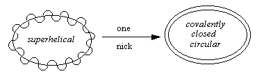
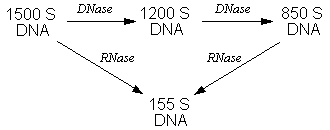

Molecular Biology
Suppose a plasmid found in a bacterium called strain A is extracted and isolated. It is then used to transform two strains, A and B. It will be found that strain A produces better (more numerous, greater quality) transformants.
Or suppose a phage that emerges from lysis of strain A is now used to try to infect strain B. The result: no infection. Closer examination shows that the DNA degraded when the capsid attached.
Meselson & Jahn isolated such an endonuclease from the E coli K12 strain. This was the first report of something called a restriction endonuclease.
Restriction enzymes recognize specific DNA sequences, and they compete for enzyme activities that involve either cleavage of the DNA or its modfication.
Type I endonucleases are isolated from strains like K12. Cofactors for activity include ATP and S-adenosylmethionine (SAM).
| Biochemistry 201C | Molecular Biology | Spring Quarter 1987 |
Processes such as replication, recombination, packaging into viral capsids, and transcription require the rearrangement of topological forms of nucleic acid (chromosomes). DNA in bacteria are packaged into the cells only if supercoiling is possible. Enzymes called topoisomerases are responsible for achieving this coiling.

A structural feature of the E. coli chromosome is the presence of small coiled elements which resemble beads on a chain. A protein called DNA-binding protein II is present in E. coli and has a total MW of 20,000, consisting of two identical subunits of 9500 Da. Experiments with SV40 DNA show this protein is responsible for forming the beaded structures that look like nucleosomes in eukaryotic DNA. Unlike nucleosomes, these structures show some instability.
DNA domains--DNA that is in a restrained state and which is irradiated to nick it will form a DNA that is partially relaxed. DNA completely unrestrained and irradiated for nicking will form thoroughly relaxed DNA. If coumeromycin is added to these irradiated DNA solutions, the partially relaxed DNA becomes partially supercoiled, while the relaxed DNA becomes or stays completely relaxed. The DNA studied in these particular experiments was F plasmid DNA. It is known that coumeromycin inhibits a protein called DNA gyrase which is responsible for supercoiling DNA in bacteria. Bacterial DNA is never completely relaxed even when multiply nicked.
E coli which has been carefully lysed and studied under EM shows 50-100 regions which are 20 �m long each, each region representing a domain of supercoiling. It has been found that supercoiling of this DNA is likely to have a large RNA component, as digestion with RNase lowers the sedimentation rate of the DNA (the rate would be an index of a supercoiled state).

Trimethylpsoralen (TMP) is a mutagenic substance which photobinds to DNA (it is excited by 360 nm light). A relationship between DNA supercoiling and the binding number and binding rate of TMP has been demonstrated. Nicked DNA shows a lower slope on a curve of TMP binding vs. light exposure at 360 nm. Addition of coumeromycin also reduces TMP binding, the reason apparently being that DNA gyrase is necessary to maintain a steady state of supercoiling, as events that lead to loss of supercoiling are always occurring.
The RNA component in supercoiling is not well known. Addition of the RNA polymerase inhibitor rifampicin shows inconclusive results. RNase is clearly seen to lower the supercoiled state however.
| Type I | Type II |
|---|---|
| DNA topoisomerase I (MW 110,000) | E coli DNA gyrase (also called topoisomerase II) |
| causes single-stranded breaks (changes L by 1) | causes double-stranded breaks (changes L by 2) |
| relaxes negatively supercoiled DNA, with rate of relaxation becoming progressively slower with DNA in a more relaxed state | requires MgATP for activity: converts + to − twists (producing supercoiling) in presence of ATP; in absence of ATP, DNA is relaxed |
| a Tyr residue forms the important catalytic site | DNA-dependent ATP hydrolysis is observed |
| maps to topA at 28 min on chromosome;
mutations to topA produces mutations in DNA gyrase
E coli topoisomerase III is an ATP-binding protein which changes L by 1 and binds to novobiocin | DNA gyrase composed of two subunits: subunit A is present as 100 to 105 kDa enzyme resistant to antibiotics nalidixic acid and oxolinic acid and responsible for breaking and reforming DNA; subnunit B is 90-95 kDa and is responsible for binding to novobiocin and coumeromycin and appears responbile for energy coupling |
The gyrase seems to show a substrate specificity (see below). Cleavage of the DNA by the gyrase A subunit does not require ATP itself, only reforming the bonds. Isolation of DNA mixed with gyrase in ATP absence produces a complex of DNA covalently bound to a Tyr residue on the A subunit.
--AT/AGTC CT--
--TA TCAG/GA--
Supercoiling and gene expression may be mutually exclusive in bacteria. DNA relaxed by treatment with coumeromycin shows increased expression of mRNA species by 10-fold. It is also known that temperature-sensitive mutants of the gyrase show increased expression at the nonpermissive temperature.
These are genetically and physically relocatable elements hopping from one genome to another.